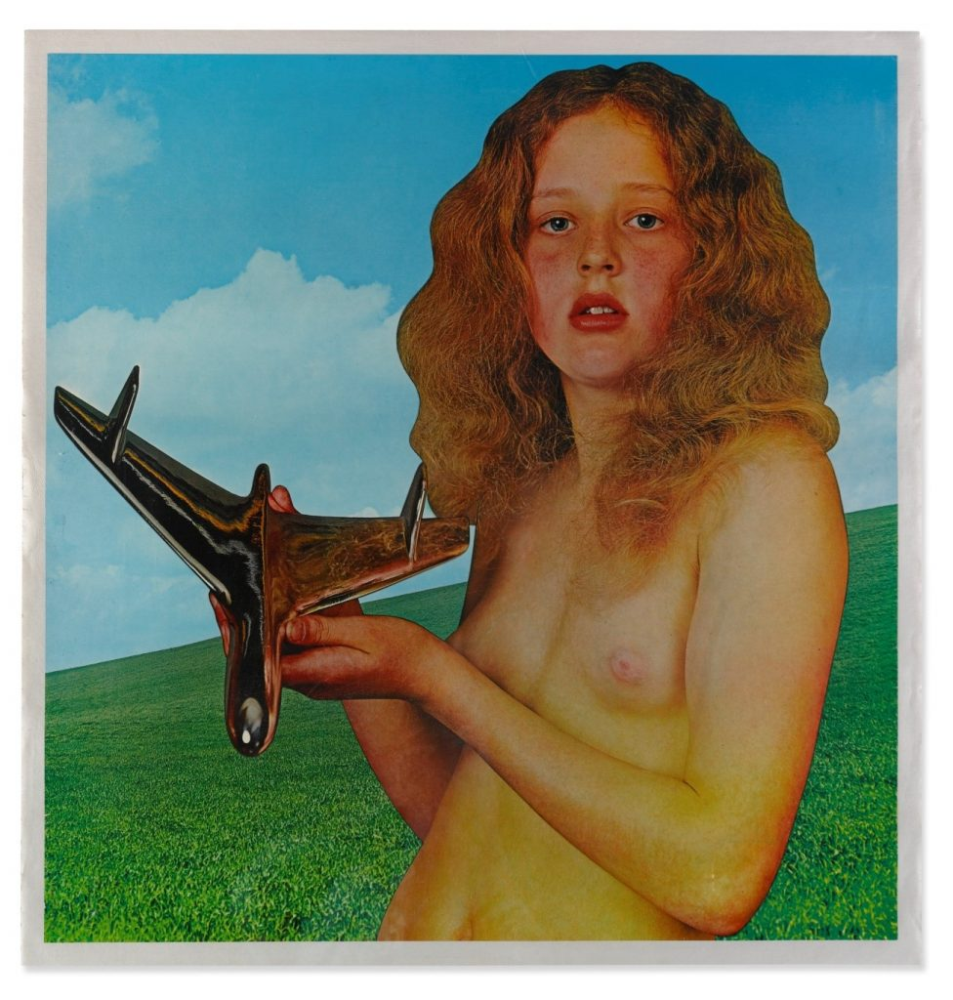

Clásicos del género: Blind Faith – “S/T” (1969)
La banda surge por casualidad, después de la ruptura de Cream, Eric Clapton y Steve Winwood, disfrutaban en una cabaña tocando temas con la única pretensión de divertirse. Steve Winwood, ese precoz talento que con 15 años tocaba en Spencer Davis Group, y posteriormente había fundado Traffic, al regreso de una gira de la banda por Estados Unidos, tras la decisión del guitarrista Dave Mason de quedarse a residir en los Estados Unidos, se encontraba con que Traffic, en esos momentos había desaparecido. Gracias a las rupturas de dos grandes bandas nace Blind Faith.
El proyecto tomó forma debido a que Ginger Baker, el batería de los extintos Cream, apareció por la cabaña en la que Clapton y Winwood disfrutaban juntos haciendo música y gestó la idea de formar la banda y publicar un disco. Incorporaron a Rich Greg al proyecto, bajista que había estado en Family, y que posteriormente se incorporó a los reformados Traffic después del fin de la breve aventura de Blind Faith.
Ni que decir tiene que los moldes con los que se gestaba la banda no podían ser mejores, de ahí la calificación de “supergrupo”. Músicos experimentados y con ganas de divertirse, que previamente habían participado en las más brillantes de la escena británica: Yardbirds, John Mayall’s Heartbreakers, Cream, Grahand Bond Organization, Family, Spencer Davis Group, Traffic…
“Had To Cry Today” abre con un poderoso riff de Clapton, bien acompañado por la característica voz de Winwood. Uno de los temas que más se acerca al sonido que había ofrecido Cream. El registro avanza convirtiéndose en una jam, en la que la batería va dando hachazos hasta la culminación final, después de caminar por pasajes tranquilos se intensifica y se llena de fuerza.
Uno de los momentos álgidos del disco aparece en la maravillosa balada “Can’t Find My Way Home”. La guitarra acústica introduce la dulzura con la que se manifiesta la voz de Winwood. Un tema amable, responsable de que el disco consiguiera alzarse a lo más alto de las listas tanto inglesas como americanas allá por el mes de julio de 1969. No aparecen los grandes solos de guitarra, la batería se limita prácticamente a los platillos, pero no se necesita más para alcanzar la perfección. El blues subyace durante todo el tema. Las especulaciones sobre el sentido del tema son variadas. Teorías sobre rupturas amorosas, teorías sobre la guerra y la muerte, y la más extendida, que habla sobre el infierno de las drogas.
En aquellos años, era frecuente que las bandas introdujeran alguna versión en sus discos, y este no iba a ser menos. El cuarteto se atreve con una alegre versión del clásico de Buddy Holly. “Well All Right” se presenta más fresca y alegre que nunca. No en vano fue el tema escogido para el concierto de presentación de la banda en Hyde Park el 7 de Julio ante 100.000 almas.
En el verano de 1969, Blind Faith se embarcó en una gira por los Estados Unidos y por Escandinavia. La gira no tuvo el resultado esperado para el grupo. No es que no obtuvieran éxito, sino que Eric Clapton había huido de la presión que tenía en Cream, y agobiado, dejaba todo el protagonismo para Winwood en sus shows quedándose en un segundo plano. El final de gira y el regreso a Londres supuso la ruptura de la banda, lo que permitió a Clapton embarcarse en la aventura americana con la banda que les había teloneado en los Estados Unidos, que no era otra que Delaney and Bonnie. Una formación con la que podía disfrutar tocando, sin más, y con los que Clapton interactuaba más que con su propia banda durante la gira. Algo que no había conseguido con Blind Faith.
“Presence Of The Lord”, sonaba en todas las emisoras de radio, lo que definitivamente catapultó el éxito de la formación. El tema había sido elegido como single. La composición lo merecía sin duda. La brillantez con la que Clapton se mostraba con el wah wah era sublime. Posiblemente con este tema consiguió uno de sus anhelos. Clapton desde joven, había tenido la meta de poder hacer llorar a la audiencia con una sola nota. En el solo de la parte final probablemente lo consiguiera. La voz de Winwood alcanzaba esas cotas de aire soul gospel que le había caracterizado, pero esta vez elevado a la máxima potencia. Sensibilidad pura, la dulzura hecha voz. Susurrante, seductora, placentera. La fuerza del tema corría de cargo de un Clapton apoteósico, bien custodiado por Baker y Grech.
La cara B del disco contiene dos temas. “Sea Of Joy” y los 15 minutos de “Do What You Like”. El primero de ellos, un nuevo tema compuesto por Winwood difiere de alguna forma de la línea marcada en el resto del disco. En esta ocasión los registros vocales son más chillones, con más acidez en determinados pasajes. El trabajo de Rick Grech aquí es más que notable, introduciendo acordes de violín que suavizan los excesos de guitarra y batería en alguno de los pasajes. Y el órgano recuerda a temas góspel. El cierre era para el único tema compuesto por Baker. “Do What You Like” es posiblemente el tema más psicodélico. Una jam en la que abre con unos coros custodiados por un insistente bajo y teclados, y en dónde la batería va dando aire para el lucimiento del resto de los instrumentos. De ambiente psico-progresivo, discurre por los terrenos de la libre creación musical a partir del cuarto minuto. Desapareciendo las voces, para sucesivamente ejecutar interludios de teclados, de solos de guitarra y de bajo, para lucimiento de cada uno de los miembros.
Otro de los datos a reseñar es que la portada del disco creo una gran polémica. Una joven preadolescente con el torso desnudo sujetando una especie de avión con connotaciones fálicas (o al menos, eso querían ver algunos). Aquello no podía editarse en los Estados Unidos en semejante formato, por lo que fue sustituida por una foto en blanco y negro de los miembros de la banda.
Los mentideros de la época hablaban de que la chica que en ella aparecía, era la hija del propio Ginger Baker. Esto fue desmentido años después por el encargado de aquel diseño. El reputado fotógrafo Bob Seideman, confesó que la muchacha iba a ser una desconocida que encontró en el metro londinense. Tras contactar con los padres al final no fue ella la elegida, sino su hermana de 11 años la que a cambio de 40 libras hizo de modelo. La chavala había pedido un caballo como compensación por aquel posado. Otra de las curiosidades es que en la misma, no aparece el nombre de la banda ni del álbum. Un deseo de Clapton de que esto fuera así.
Una obra maestra de una breve formación que no pudo darnos más alegrías musicales por las presiones del entorno. El circo y las exigencias de la discográfica resulto ser un agobio, particularmente para Clapton, que hizo que tirara la toalla. Había salido de muchas presiones en Cream y ahora se encontraba con más todavía. Una lástima, pero aquí dejaron su sobresaliente legado..